Aura for Pebble · Pebble Time 2 Aura para Pebble · Pebble Time 2
Aura, on my wrist. Aura, en la muñeca.
It all started under the weather umbrella, so Aura is the name I use for everything I build for Pebble. I had the original Pebble back in 2015, and my Pebble Time 2 just arrived. Two watchfaces and a full weather watchapp live here now, all free and open source.
Todo empezó bajo el paraguas del tiempo, así que Aura es el nombre que uso para todo lo que hago para Pebble. Tuve el Pebble original en 2015, y mi Pebble Time 2 acaba de llegar. Aquí viven ahora dos esferas y un watchapp del tiempo completo, todo gratuito y de código abierto.
WatchfaceEsfera
Aura Essential
A free, open-source watchface with configurable colour blocks and complications, in five colour themes. It's the first piece of Aura's design language on the Pebble Time 2.
Una esfera gratuita y de código abierto, con bloques de color y complicaciones configurables, en cinco temas de color. Es la primera pieza del lenguaje de diseño de Aura en el Pebble Time 2.
Pebble · Aura Essential, on the Pebble Time 2, five colour themes· Aura Essential, en el Pebble Time 2, cinco temas de color
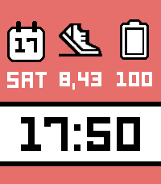
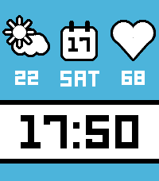
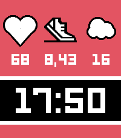
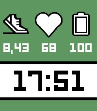
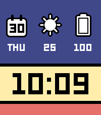
WatchfaceEsfera
Aura LCD
An 80s-inspired LCD face that keeps the look of a classic digital watch and reorganises it for reading at a glance. The time is in slanted 7-segment digits, the date in 14-segment LCD letters. Under the date, a small arch shows the sun's path with the time left until sunset (or sunrise, at night). The bottom has the current temperature with the day's low and high, and the next 12 hours of temperature and rain chance. After sunset the face turns negative with amber digits.
Four layouts (Quiet, Panel, Timeline and Stack), plus day and night colours, accent, date lettering, 24 or 12 hour time and units, are all set in the settings page. Weather, forecast and sun times come from Open-Meteo, with a worldwide city search or the phone's GPS. No account, no key.
Una esfera LCD de inspiración ochentera que conserva el aspecto de un reloj digital clásico y lo reorganiza para leerlo de un vistazo. La hora va en dígitos de 7 segmentos inclinados, y la fecha en letras LCD de 14 segmentos. Bajo la fecha, un pequeño arco muestra el recorrido del sol con el tiempo que queda hasta el ocaso (o hasta el amanecer, de noche). Abajo están la temperatura actual con la mínima y la máxima del día, y la temperatura y la probabilidad de lluvia de las próximas 12 horas. Después del ocaso la esfera se invierte, con dígitos ámbar.
Cuatro diseños (Quiet, Panel, Timeline y Stack), además de los colores de día y de noche, el acento, las letras de la fecha, el formato de 24 o 12 horas y las unidades, se ajustan en la página de ajustes. El tiempo, la previsión y las horas del sol vienen de Open-Meteo, con búsqueda de ciudades en todo el mundo o el GPS del teléfono. Sin cuenta ni clave.
Pebble · Aura LCD, on the Pebble Time 2, four layouts· Aura LCD, en el Pebble Time 2, cuatro diseños
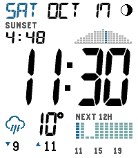
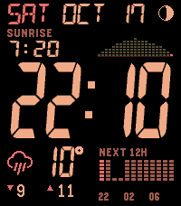
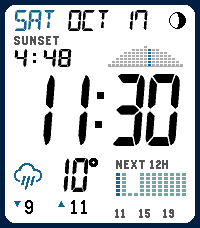
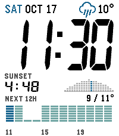
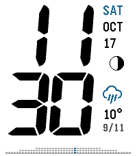
WatchappWatchapp
Aura Weather
Not just a face: Aura Weather puts the whole app on the Pebble Time 2. It opens on the living sun-over-sky hero, then a deck of cards for the next eight hours, six days, sun and moon, wind, UV, air quality, and a colour-coded aviso card when one is active. Worldwide via Open-Meteo, with AEMET as an option in Spain, no account, no key.
No solo una esfera: Aura Weather lleva la app entera al Pebble Time 2. Abre con el cielo vivo del sol o la luna y luego una baraja de tarjetas para las próximas ocho horas, seis días, sol y luna, viento, UV, calidad del aire y un aviso con su color cuando hay uno activo. En todo el mundo con Open-Meteo, con AEMET como opción en España, sin cuenta ni clave.
In submission to the Pebble appstore. The source is on GitHub today.
En trámite de publicación en la tienda de Pebble. El código ya está en GitHub.
Pebble · Aura Weather, on the Pebble Time 2, the full card deck· Aura Weather, en el Pebble Time 2, la baraja completa
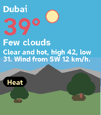
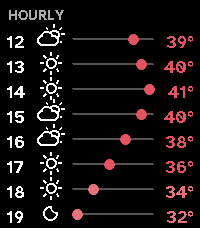
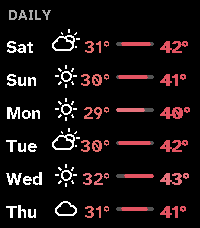
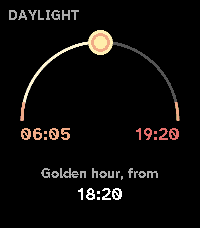
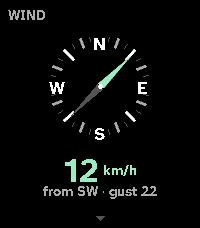
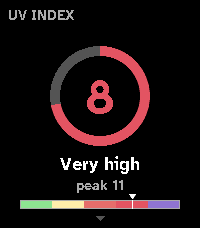
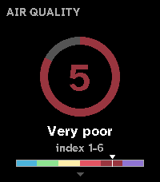
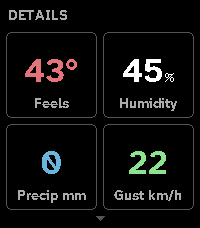
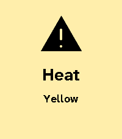